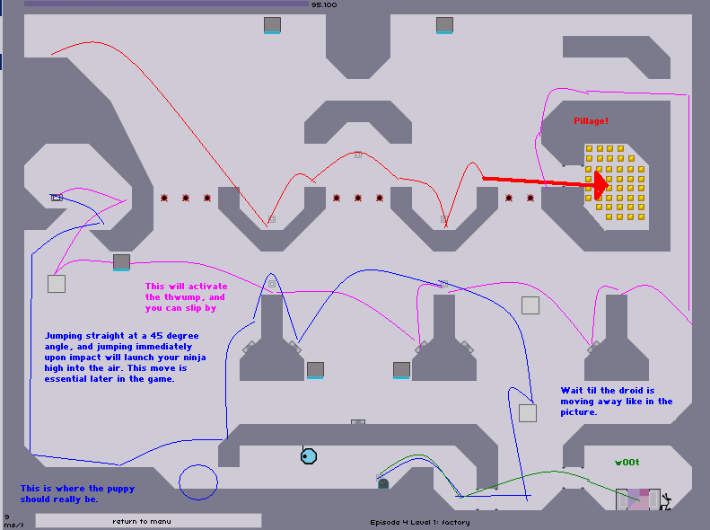
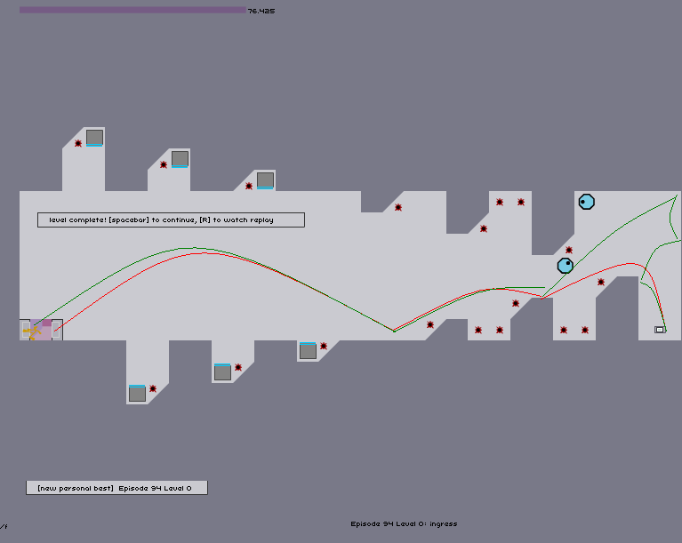
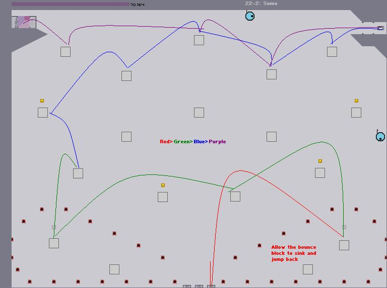

#292739 45 2007-02-02T06:15:24Z Alphaniner it's realy annoying, on the second map when i delete an object and put it back agian so it's at the end of the code it isn't so i keep trying all of the -# things and it won't make a difference
The very last number in the code is not necessarily the power of the teleporter. Look at the last two numbers in the code for the jump pad.
If it is just a '0', then that is the angle of the pad, used for making diagonal teleporters, which you'll learn about later.
You, however are currently looking for a 1, or a -1.
#298774 10 2007-02-19T00:29:29Z Alphaniner Hey, Blue Tetris...
Do you ever feel, well, remorse for all the strife you've caused people?
How do you sleep at night? Have you no soul?!
#298830 2 2007-02-19T05:06:56Z Alphaniner For Bricklayer, just watch some of the slower high scores runs. They'll give you a feel of what to do.
As for Apoplexy. Damn that level. I just finished it a few hours ago. Anyhow. To paraphrase Aries:
There are essentially 3 "sections" here. A top, middle, and bottom. Top is easy. Don't get a splode. Gold is inconsequential.
Middle, more difficult. There's one droid real close to you. Bait him, or jump him. Carry on jumping. Try to take as few jumps as possible.
Now the bottom. As soon as a droid enters the area, you need to lure him across. You have to keep them dashing across one of those top two areas. Otherwise, they'll pass over you, dive on you, and you'll be dead.
Once you have the switch, there's a nifty lil' trick. If a droid enters the area, lure it as usual, but on the way back, you can just run over the triangles. You'll clear the mines, but won't enter the kill zone of the droids that are dashing across the top.
Jump back to the middle. Maybe you got lucky, and all the droids are down at the bottom. If so, just hop across, and try not to kill yourself. If there are droids there, either try to lure them across at a low area so you can jump over them, or up at the top of the screen, so you will pass safely underneath them. If they are right in the middle of the screen, it is difficult, because you will have to dodge 2 or 3 drones in the air while trying to land safely. Land each jump on the triangle part to the right of the mine. Jumping to the left side of the mine is extremely risky.
If you survived that, you're home free. Land on that first platform of the top area. The droids can't get you here. You can safely just run over the ramps, and you will clear the mines, provided you have a bit of speed. Judge that for yourself. You don't want to try and be jumping all over the place and hit a mine.
On this level, you can't really say: Go to point A, and then go here. And jump over there, because everything is always on the move. I can give you general strategies. The rest is up to you. Practice 'til you think you're gonna turn inside out. Then keep trying.
Good luck. Don't worry about gold. If you have 40 or so heading into the next level you should be good. 69-4 is very fast paced and there's lots of gold, so you can pretty much enter that level with a tiny amount of time but still finish in plenty of time.
#299439 448 2007-02-21T02:23:32Z Alphaniner 24-4
Pitcher Plant
I can get in and out on my first trip through pretty consistently. Perhaps a route through after getting the key to the exit door? Y'know, your second time in? I can't figure anything out. I hit a mine, or get missil'd.
That's not fair. The back route was so simple I was overlooking it. Meant to do that. Fooled you. Level done. *Glee*

Here's a little picture for people having trouble with it. I just marked out my favorite route. I find it near impossible to use those jump pads at the bottom. Where I say "Get a nice jump off of the bounce block", it means that you will be rising on the block, and if you have a poorly timed jump, you will barely go anywhere, and hit the missile. Watch for it.
I only go to the top to shake the missile. You can't actually get the key then. In my picture, the route doesn't actually touch the key. I assumed you could figure that out yourself.
The Ninja has rocket boots.
Like I said. That return journey was too simple.
#299465 181 2007-02-21T04:10:23Z Alphaniner 
Pretty self-explanatory. Just don't get killed by the thwumps. Bait 'em.
#299474 183 2007-02-21T04:42:46Z Alphaniner That's why I set my Boss key as L. Chances of accidentally hitting it and then Q? Quite minimal.
#299677 5 2007-02-21T23:10:24Z Alphaniner Check on your laptop keys. On the keys, there may be alternate letters in blue or off to the side in smaller type.
Look just to the left of your spacebar. There may be a little button that says "Fn". Press it, and find the key that has the small or blue "0" on it. Press that key while holding fn.
That might get you into debug mode. Of course, your laptop may not have any of those.
Whatever.
#300523 8 2007-02-24T05:56:22Z Alphaniner I fail to see how this is any different from wall jumping. Except for, if you were running up the walls, you'd blow up on any mines that were there.
#301204 185 2007-02-26T02:11:28Z Alphaniner If you're playing the game when you should be doing work and an authority figure is approaching. The screen simply turns gray and all sounds stop.
It's less incriminating.
#301714 187 2007-02-28T00:12:06Z Alphaniner 
I'll let you figure out the exact timing of that jump from the upper right corner, but it's just about as late as you can without getting hit by the drone coming up that wall. One or two tries should you get you the exact trajectory too.
#301983 5 2007-03-01T02:58:28Z Alphaniner 
Blue: Run up that little 45-degree slope, jump, and right after you leave the ground, wall-jump off that little spot to your left. You should catch some huge air, and get both those switches.
Purple: Try to build up a little speed. As you jump off of that thing, release all direction keys and jump, you'll fly high enogh to get that first ledge.
Green: Okay, I got this one wrong on the picture, but I'm too lazy to fix it. jump off that first ledge until you're just beneath that one big sticky-out part that the switch sits on. Jump as if you were going to try and cross the gap, but come back to the ledge sticking out above you. Jump up to the key. Be careful on the way down.
#302161 189 2007-03-02T04:22:03Z Alphaniner Elementary, my dear Watson. (Sorry. I had to)

Obviously, there are drones chasing you, so you may have to wing it while playing this level to evade them, but if you stick to that general path, you should be okay
The TXT that I've attached has 2 different demos, along with the level.
If you don't know what to do, follow these instructions:
1) Launch N
2) Hit the "~" key to go to De-Bug mode
3) Copy and paste the level data into the top box. Click
outside the box and hit 'L'.
4) Copy and paste the data of the demo you want to watch into the bottom box. Click
outside the box and hit '3'
5) Hit 'Q', turn on CapsLock, and hit 'P'. The demo should play.
Demo 1 is a pretty basic route that I showed in the paint map above.
Demo 2 is a little less conventional, with some moves you can pull off when you're in trouble. It's more evasion and that kind of tactics.
Attachment (lost): post-11-1172809323.txt
#303082 389 2007-03-06T23:05:24Z Alphaniner 1) More Metanet Made Races (69-4 is the only one I know of, and that kicked major ass)
2) Ahh. Okay. Ignore me.
3) Whatever Mare and Raigan want to do..
#14324 1 2007-03-07T02:20:38Z Alphaniner I am attempting to make a demo for every level in the game. Every one. It's a challenge. Post here to claim a set of episodes to do. Don't claim a set of episodes that you have never done before.
Post here to claim some episodes to do. I will PM you confirming it, and you can begin work. Try to have them done as soon as you can.
All you Fanecas and L3xs out there, just take it easy on these maps. We want it to be possible for mere mortals. We don't want this to be a replica of highscore runs.
Now we can simply direct people asking for help to this pack, and they can get answer whenever they need them.
Okay. I'm glad to see you guys are taking such an interest. Anybody throw me a bone here?
Okay. Episodes 1-18 done. Come here for the first two columns-ish of your N demo needs!
Attachment (lost): post-11-1175309146.zip
#304818 192 2007-03-13T00:35:19Z Alphaniner 3 Things.
1) Cut the smilies. I'm tempted to not help you at all.
2) I know for a fact that this has been done before, because I beat this level with the help of good ol' Aries.
3) The Help itself:
I assume you only are having trouble with the left side? Get as close to the right wall of the shaft as you can without hitting a mine, and fall. The thwumps on the right will break your fall, so you won't die of falling. The left thwumps aren't fast enough to reach you.
#305052 3 2007-03-14T00:04:39Z Alphaniner To watch a demo:
1) Click on the TXT file below
2) Copy and paste all of it into the box at the bottom of the "Userlevels" screen
3) Click "Watch Replay"
Attachment (lost): post-11-1173830679.txt
#305056 34 2007-03-14T00:20:24Z Alphaniner The coolest kind of AI would be mirror. Used for puzzles and the like. You hit left. One ninja goes left, the other right. You would have to simultaneously control them in opposite directions.
Shift would still make both of them jump. Eh?
#305495 195 2007-03-16T00:43:27Z Alphaniner Oh, C'mon, was a picture really necessary?
#305535 197 2007-03-16T03:00:18Z Alphaniner That's because silly little Scythe told you to drop on the wrong side. You must do it on the right side. I mean that as in correct, and the opposite of left.

The thwumps will break your fall, but not you.
Plus, a demo, cuz it makes me happy.
Copy and paste all the contents of the TXT file into the lower box in the userlevels screen, and hit "watch replay"
Do not be decieved by the file name. It is in fact 36-2. Enjoys.
Attachment (lost): post-11-1174014018.txt
#305538 102 2007-03-16T03:09:46Z Alphaniner Mines: 3972
Self: 3179
Drones: 2755
Rockets: 1175
Floorchasers: 1027
Gauss Turrets: 988
Twumps: 865
Lasers: 499
Chain Guns: 236
Total: 14696....IT'S OVER 9000!!!!
That's a lot of bodies to get rid of...
#305713 200 2007-03-16T22:20:01Z Alphaniner Here ya go
And 36-4. Pre-emptive. Just in case.
You can only attach one file per post. So the post before this one that I made will have the 36-4 one on it.
Attachment (lost): post-11-1174083601.txt
#305898 2 2007-03-17T21:03:02Z Alphaniner Just create a file called "userlevels" using Notepad or TextPad in the same directory as the Game itself.
Copy the contents of the attatched TXT
Attachment (lost): post-11-1174165382.txt
#305939 112 2007-03-18T01:35:10Z Alphaniner Episode 66, y'all.
I'll be working on others later.
Avalon on Numa Attachment (lost): post-49-1174182057.txt
#306434 3 2007-03-19T23:51:51Z Alphaniner I think that's pretty much it. Woo for you.
#306435 12 2007-03-19T23:57:31Z Alphaniner Yeah. You and your Macs.
Just look for a program called TextEdit or something. You'll have something like that. If you an OS that comes without some crappy barebones text editor, then the world has come to an end.
@ AMLT: I actually have the line &userdata=
in my TXT file, thank you very much!

#306702 204 2007-03-21T01:10:44Z Alphaniner 9-0? I SUCK yes.
I got a present for ya.
The way to perform the one-way glitch as in my demo:
1) Get trapped under a one way.
2) Jump up
3) Wait till you hit the bottom of the one way
4) Wall jump like mad
In order to wall jump off of
-Doors
-One Ways
-Thwumps
you must hold
toward the object you wish to jump off of.
Hopefully, if you jump furiously enough, you will eventually come through. Then just drop, and aim for that little 45 degree section of ground.
Open the TXT. Copy .:everything:. in there. Paste into the box in the "Userlevels" menu.
Hit "Watch Replay". Pop some popcorn, sit back and enjoy.
#306898 454 2007-03-22T02:15:02Z Alphaniner Whoosh. I've come to rescue you.
Same concept as before.
Copy and paste the demo into userlevels. I have two of them here. One of them is the standard. It is fairly easy if you follow the route, but you just have to book it across the top or be made gauss food.
The second is more fun. You get to stick it to the man.
You can jump through those oneways, as you can see from my demo.
You must wall jump when you are just underneath the one way. However, to wall jump off of a one way, you must hold towards it when you try to wall jump, otherwise you'll just fall.
Go see Atilla's College for Ninja if you're still confused. The levels that will help you are
-1 1/2 Ways
-Feels Like No Grip
Since I have yet to see a paint map for platformula, and it seems like a common request, I will make one.

Suddenly I understand why I have never seen a Platformula paint map
Red>Blue>Green>Purple>Yellow>Pink
Don't you dare go back for that gold. The first wall jump is tricky. You need to jump off of the wall, and then wall jump off of the side of the platform. Just try it. You'll get the hang of it in a minute.
w00t. Just beat Platformula for the first time.
Attachment (lost): post-11-1174529702.txt
#307151 31 2007-03-23T04:28:26Z Alphaniner I just beat episode 83. The 80's column is all I have left to do. Cue epic struggle.
Geez. Between a Rock and a Hard Place was messing with my head.
When it's 1:30 AM (as it is here), and a person doesn't want to have to re-play bricklayer enough (can't stand bricklayer), then you will become desperate.
I was getting into arguements with the rocket launcher. I also tried using diplomacy on the rockets. Finally I just ran like all hell.
#307688 209 2007-03-25T15:48:08Z Alphaniner For Flash Geek:
Copy and paste the contents of the TXT file into the box in the userlevels menu and hit "Watch Replay"
I prefer this method. I find it difficult to go all the way up the right wall by wall jumping.
Read it for God's sake!
If you need a demo with any of the episodes 1-25 and counting! click
here
I will be updating it frequently.
Bump the thread too, while you're there.
Attachment (lost): post-11-1174837688.txt
#307979 2 2007-03-26T23:49:42Z Alphaniner Supposedly there have been reports of people who had improved performance while listening to music in WMP, iTunes, WinAmp, etc.
Also, running too many other programs will slow things down. Try to cut down on the number of other programs you have running. If you're burning or ripping CDs, that too will slow things down.
Or maybe your computer sucks.
#308205 3 2007-03-27T23:08:59Z Alphaniner I agree with above. Go into the big room full of gold on the first level of this episode.
It's just about the only real stash anywhere.
#308623 41 2007-03-29T22:46:26Z Alphaniner Still stuck on column 84.
I've been working on my complete demos pack trying to put it off as long as possible.
*takes another crack at it*
#309298 43 2007-03-31T23:42:57Z Alphaniner woop.
Just beat Episode 87.
Now just 10 levels between me and the final secret. Including the 2 hardest levels in the game.
It's so strange, how much better I am now than when I started. I never thought I would ever stand a chance in hell of beating N. Now I can almost taste it.
#309718 457 2007-04-02T23:02:50Z Alphaniner If you are having difficulties with any level in Episodes 1-18, just go straight to
this topic.
#310203 48 2007-04-05T11:16:12Z Alphaniner Oh, believe me. I've looked at it. I started a religion based on that guide, it's helped me so much. I am so angry at myself/blue_tetris/world.
I was literally 1 shift key away from completing MTI, when apparently I mistimed my jump. It made me want to cry. Then I had to go bed. And now I won't have another opportunity to beat it 'til tommorow. *cries* Well, at least I know I can beat it.
I'm just angry that I have to go through those first few sections of MTI that are now ridiculously easy for me, just to get to the intense bit. Alas, if only I was a mine-jumper.
#310317 47 2007-04-06T01:29:25Z Alphaniner Sign me up!
Sounds like some fun.
#310565 64 2007-04-07T01:40:27Z Alphaniner KA, de-voicing me in the IRC was completely unnecessary. My brother had to check his E-Mail real quick.
I'm still in. It just takes some of us longer to complete levels, thank you very much.
Attachment (lost): post-13-1175910027.txt
#310569 66 2007-04-07T01:49:26Z Alphaniner Damn. My run was fast. If only I got all gold.
#310584 79 2007-04-07T02:04:30Z Alphaniner Duh.

#310600 125 2007-04-07T02:56:34Z Alphaniner We need to have something in Atlanta, GA.
Or I may go to Toronto, just to meet the legends that are Mare and Raigan.
#310604 89 2007-04-07T03:01:32Z Alphaniner Two points!
Attachment (lost): post-13-1175914892.txt
#310640 111 2007-04-07T04:07:57Z Alphaniner
Alright. I win. Three points now? He even has a gimpy fin. Isn't that adorable?
#311598 459 2007-04-09T19:22:09Z Alphaniner 
Try to jump from one of those 45 degree angle panels to another. You can cover ground quickly. Or do a perpindicular leap. If you must move in a straight line, do it quickly.
A demo is attached.
Attachment (lost): post-11-1176146529.txt
#311607 116 2007-04-09T20:00:20Z Alphaniner I've put this on the N Wikia, but it's kind of hard to give accurate info, seeing as this thread is in somewhat of a shambles.
But. I've made the article, made a list of contributers (as best as I can tell), and even given it a snazzy nickname (MetaBite).
We need to kick this back up.
#312275 52 2007-04-12T00:33:45Z Alphaniner N Completed at 12:23 PM EDT, on April 6th, 2007
*does small victory dance*
Oh, yeah. Almost forgot.
The end? Coolest secret ever.
#312279 118 2007-04-12T00:39:03Z Alphaniner Oh. Just out of curiousity, how are we going to make miniature levels out of maps such as 92-4: Righty Tighty, Lefty Loosey?
#312640 120 2007-04-13T01:34:05Z Alphaniner It's already just about as mini as you can get. Good luck.
#313079 2 2007-04-14T13:45:30Z Alphaniner Ohnoez double post!
I just think this is important and could help a lot of people once we finally complete it. So I'm bumping it. So sue me.
I have made demos for episodes 1-25, so if you're having any trouble with them, the .ZIP is attached below.
Attachment (lost): post-11-1176558330.zip
#313857 10 2007-04-18T00:50:50Z Alphaniner I'm still amazed I managed to beat that level.
It was amazing when I finally beat it. And subsequently, Mount Doom.
Good luck, lil' buddy.
No, see, you're doing it all wrong. You need to grab the switch and then touch the door. I don't know why people get so hung up about this level. It's quite simple
#315070 6 2007-04-22T19:18:57Z Alphaniner Okay, I started on the 30s column but it takes ages to get the demos together. What is the most efficient way of doing it?
What I do is open the "N Level Data" thing that Eeyore made. (It's a brilliant program)
Then I just start a new TXT document in wordpad. I type the episode number at the top, and save it as the name it should be.
Then I copy the data for the first level of that episode.
After that:
$Number Level Name#Metanet##Copy the level data here#
Then record the demo, and all you have to do after that is copy the demo data onto the end of that line, then hit #. Then you're on to the next level.
I have nearly finished the 20's column, so nobody start that.
#315131 8 2007-04-23T01:34:48Z Alphaniner Because I can. For fun. Because I've been wanting to re-play the game. Because I have no clue in hell how to get the demos out of the .SOL.
Talk to me.
#317221 11 2007-05-01T00:55:24Z Alphaniner Episodes 1-34 are all done. Enjoy.
If you're on this project, let's start crankin' em out!
Attachment (lost): post-11-1177980924.zip
#317391 466 2007-05-01T21:29:12Z Alphaniner Just in case you need more help. Open the TXT file, and copy everything in it into the textbox on the userlevels menu, and click watch replay. I personally think it's a great level.
Do whatever part you have the most trouble with first. I often die on the mine jumper part. If you die then, you didn't just waste a few minutes doing the whole rest of the level just to die there. The gauss shouldn't prove too much trouble.
Or if you've already beaten it, igore this.
Attachment (lost): post-11-1178054952.txt
#317695 13 2007-05-02T22:26:34Z Alphaniner *slaps Spawn of Yanni*
Get your books! You have studying to do! (Your sig told me to)
Yeah. I think a lot of people are getting busy with the end of school, and all that. Help if you can.
I'm going to finish column 30, so nobody do any of those.
#318961 15 2007-05-06T21:30:48Z Alphaniner It's part of the instructions TXT that I included as part of the .ZIP file.
I've attached it seperately for you guys.
Attachment (lost): post-11-1178487048.txt
#320857 11 2007-05-13T18:46:43Z Alphaniner Wii Code: 7868 7120 2032 8384
#323958 500 2007-05-25T00:33:37Z Alphaniner After seeing countless people struggle on 5-4, I decided to get the word out.
It is completely unnecessary to go into that section below and to the right of where the ninja starts. Y'know, the place with the seeker drone?
Watch this demo, and be amazed.
Attachment (lost): post-11-1180053217.txt
#373394 47 2007-10-21T04:12:57Z Alphaniner I've sent mine in. Oh boy.
#375381 4 2007-10-30T00:01:41Z Alphaniner This is the easiest way i could get it. Pic for the route, demo to get the timing right.

Pause at the dots on the route.
Attachment (lost): post-11-1193702501.txt
#400789 13 2008-01-14T14:48:12Z Alphaniner To unlock a new flavour, merely reaching the last level of a column is sufficient. But to unlock the secrets, you must beat the last level.
I didn't know this until *after* I skipped Mount Doom. Much to my chagrin, I had to go beat it. So, maybe save one of the easier columns for last?
#402181 2 2008-01-20T01:33:45Z Alphaniner Alphaniner aka Alphy aka Firebert aka Firebot aka FireBot asks of YOU:
Will you use your powers for good, or for awesome? Think about it.
UPDATE: Whoever voted for decepticons, you're a hero.
#402252 1202 2008-01-20T06:07:05Z Alphaniner 
It's
never lupus. And yeah. That's Steve the clock.
#417676 2628 2008-03-17T02:45:26Z Alphaniner 
Sporting the remains of a pinata after a fierce fight.